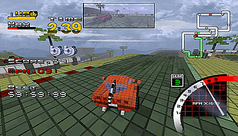

El objetivo de este modo es recorrer una vuelta completa manteniendo la posesión de la bandera (la parte del circuito rercorrido con la bandera está marcada en verde en el minimapa en el video), preferiblemente en un tiempo límit.
Para capturar la bandera, el piloto tiene que tocar el coche que la tiene en aquel momento. Sustraer la bandera permite ganar una descarga de turbo addicional. Si se sale del trazado, se pierde automaticamente la bandera, que será reposicionada en el centro del trazado.
El número de coches en la carrera es igual al número de jugadores humanos, más un coche conducido por el ordenador.
Durante cada carrera, serán asignados unos puntos a los jugadres:
- Cinco puntos por ganar la carrera
- Un punto por cada segundo que queda después de haber terminado la carrera
- Un punto cada por cada 30 metros recorridos en posessión de la bandera
- Tres puntos por sustraer la bandera
- Tres puntos por pasar por un punto de contról (marcado con un cuadrado verde en el mini mapa) mientras se tiene la bandera.
El ganador es el primer en clasificarse al terminar la quinta carrera.